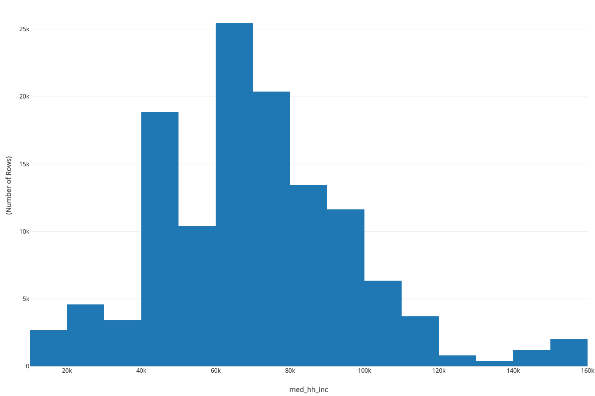
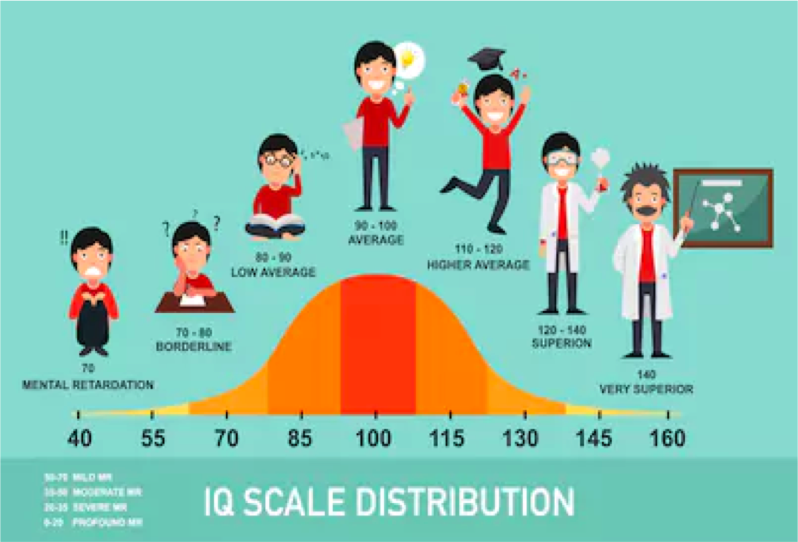
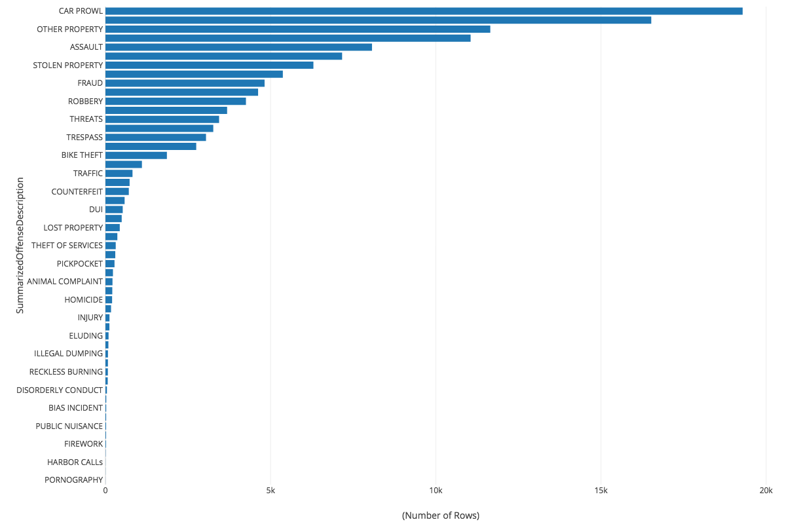
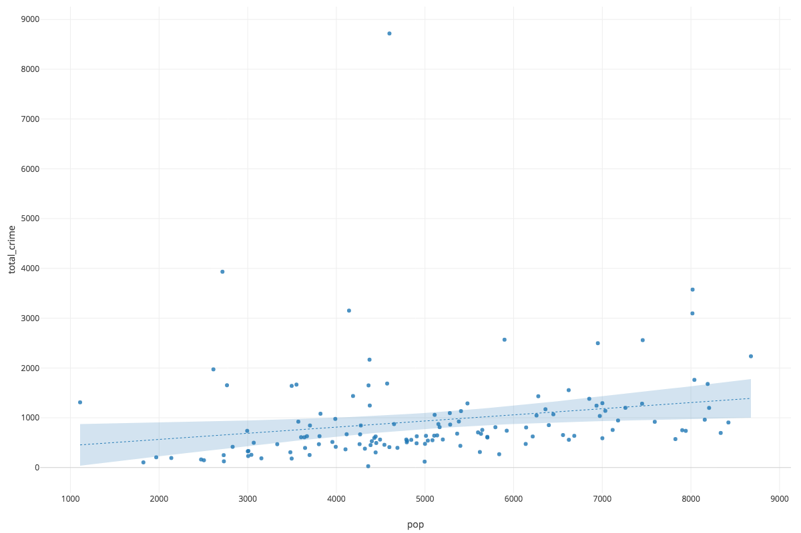
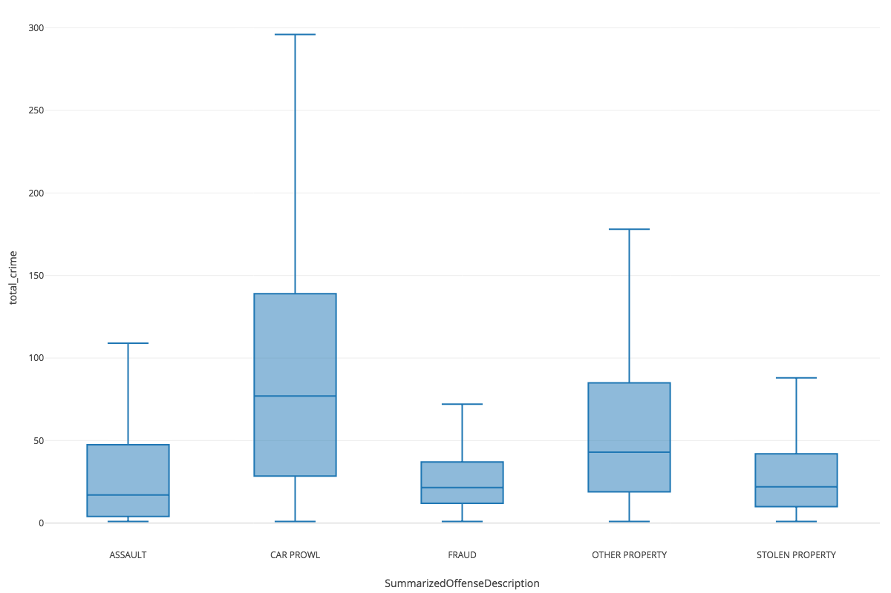
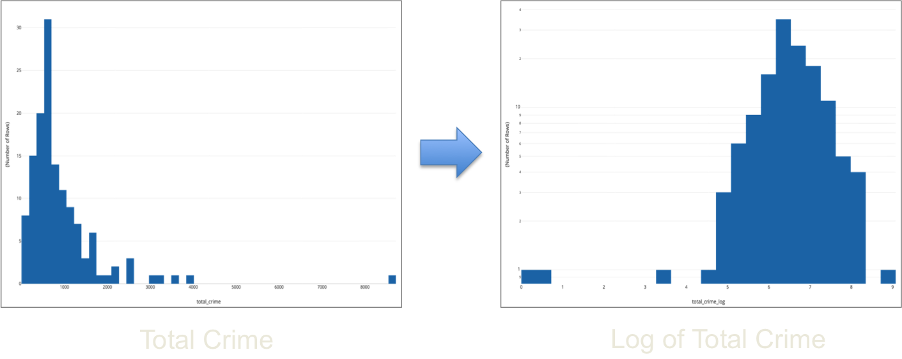
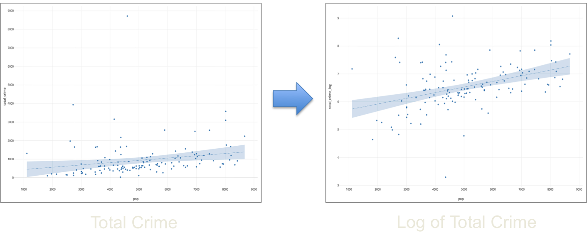
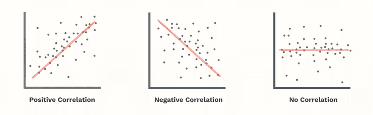
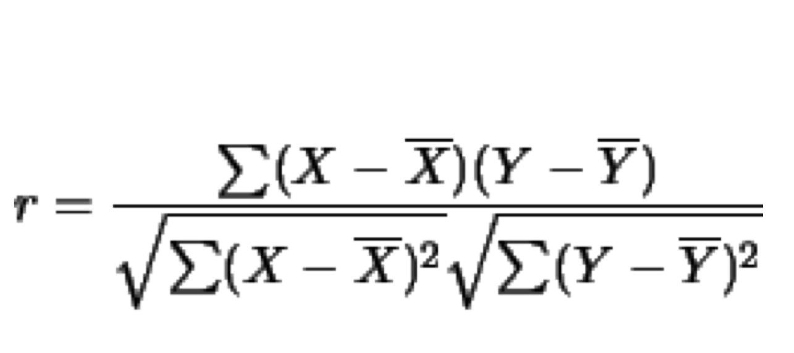
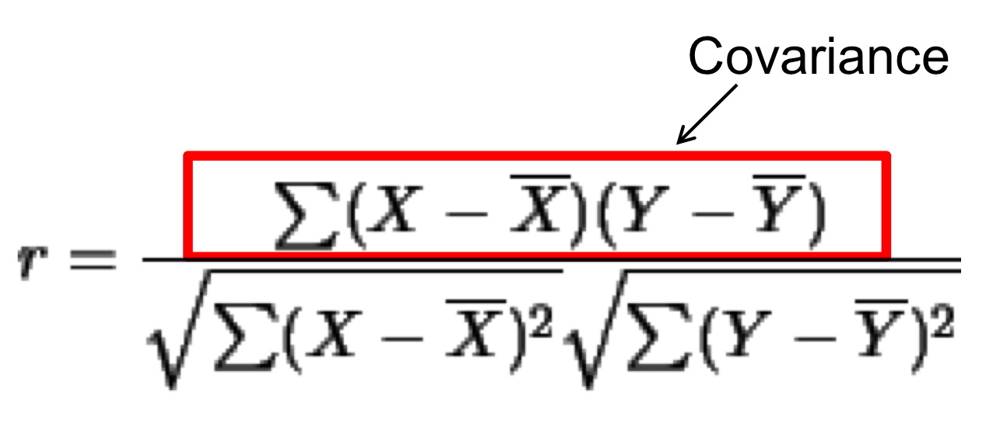

Urban Big Data Analytics
Lecture 7
Exploratory Data Analysis
July 25, 2019
Instructor: Andy Hong, PhD
Lead Urban Health Scientist
The George Institute for Global Health
University of Oxford
Assignment 3 check-in
- Questions? Errors?
- Send your R code to my email
- Remember, computers are stupid
Short Quiz
- Prep for 10 minutes
- Key materials we covered so far
- Principles and key elements
- Being able to explain terms
Exploratory
Data
Analysis
What is EDA?
- Ways to explore data and find outliers
- Set of techniques to find some patterns
- Art and science
- Data visualization
- "A picture is worth a 1000 words!"
One variable
Numeric - Histogram

The law of central tendancy

One variable
Categorical - Bar Plot

Two variables
Both numeric - Scatter Plot

Two variables
Numeric x Categorical - Box Plot

Data transformation
From Non-normal to Normal (Histogram)

Data transformation
From Non-normal to Normal (Scatter Plot)

Correlation
Relationship between variables

Correlation formula

